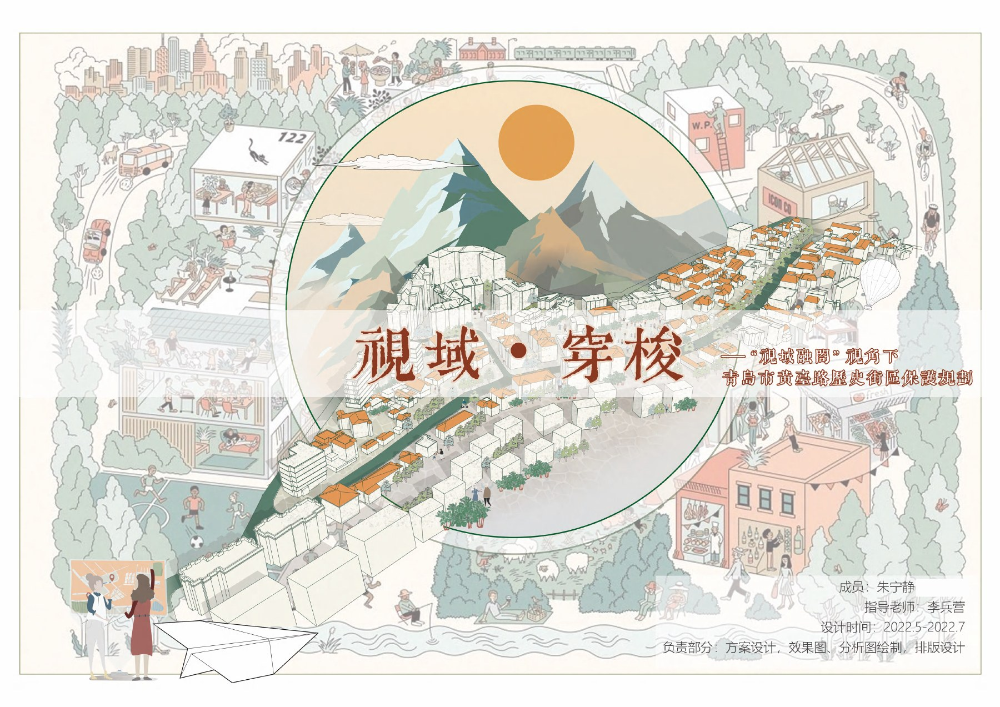

街道活力
优化步行断点、转角空间和可停留界面，让公共生活拥有连续载体。
Jean Zhu · Project 03 / 05
下一个项目 04 →Historic district regeneration
从历史演变、空间保护到街道活化，让传统街区以可感知、可参与、可持续运营的方式重新进入当代生活。

01 / Read the city
设计从城市生长与街区历史切入，梳理文化资源、建筑肌理与公共生活的变化，把保护对象从单体建筑扩展为完整的空间关系。
Layer 01 · Memory
时间轴、空间演变和文化节点共同构成设计底图。每一次更新都对应已有的城市记忆，而不是重新覆盖。
Layer 02 · Structure
空间框架明确保留、修补与新增的边界，并将公共空间、慢行网络和文化节点编织成连续系统。
02 / Activate the street
街道、商业、界面和人的活动被放在同一套策略里：用细尺度改造提高通行与停留的舒适度，让文化展示与日常经营形成相互支持的场景。
优化步行断点、转角空间和可停留界面，让公共生活拥有连续载体。
以材质、开口和首层使用为重点，保留原有尺度与街道记忆。
文化体验、社区服务与日常商业并置，支持不同时段的人流与使用。
Layer 03 · Operation
空间更新之后，以文化路线、互动体验和阶段性活动把游客与社区日常连接起来，让历史街区从“观看对象”变成可参与的城市内容。